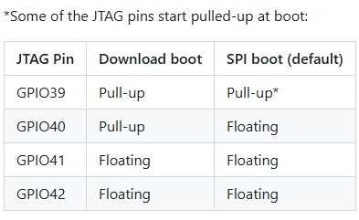
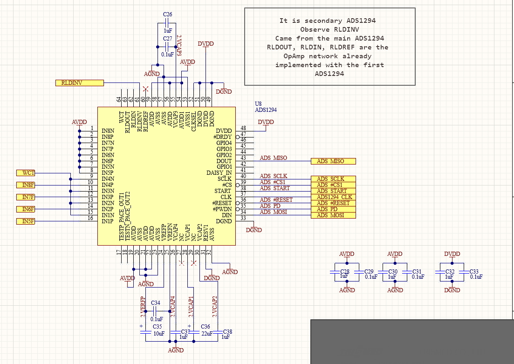
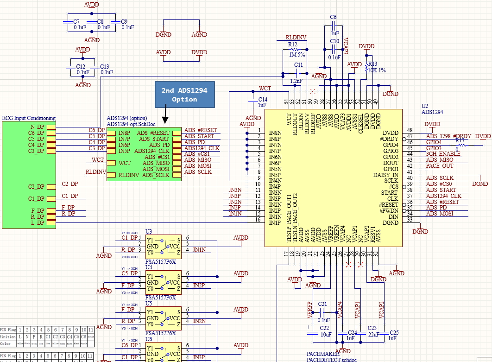
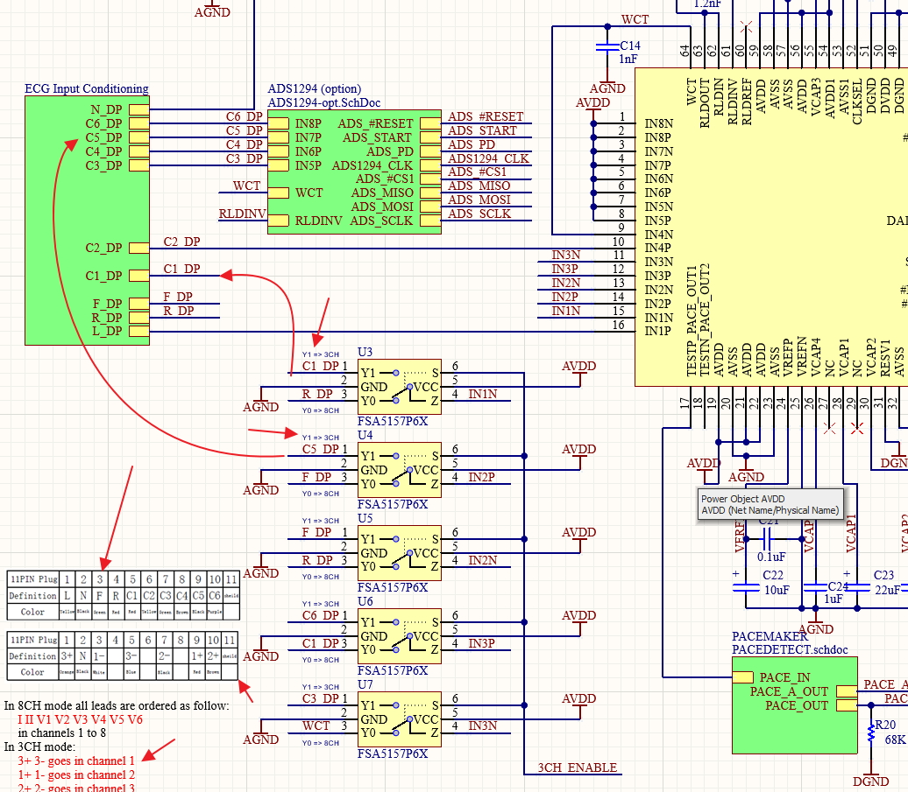

GPIO0: Pull-up (with a button to ground).
GPIO3: Leave disconnected.
GPIO45 (VDD_SPI): Leave disconnected.
GPIO46: Leave disconnected.
MUST NOT use GPIO35, GPIO36 or GPIO37. For 8MB or Octal PSRAM.
JTAG pins:
GPIO39, GPIO40, GPIO41, GPIO42
The behaviour of these pins is determined by eFuses in conjunction with GPIO3.
By default, if you haven't burnt any eFuses yet, these pins are safe to use*.
JTAG will be available over USB.
Also consider GPIO39 as it starts pulled-up at boot.

UART Pins:
GPIO43, GPIO44
Difference Between WROOM-1 and WROOM-2
WROOM-1-N16R8: Uses Quad SPI (QSPI) for the 16MB Flash and Octal SPI (OPI) for the 8MB PSRAM. It transfers flash data over a 4-bit bus.
WROOM-2-N16R8: Uses Octal SPI (OPI) for both the 16MB Flash and the 8MB PSRAM. It transfers flash data over an 8-bit bus.
WROOM-1: GPIO35, GPIO36, and GPIO37 are exposed and available for you to use.
WROOM-2: GPIO35, GPIO36, and GPIO37 are tied to the internal Flash memory.
They are not available for your use (if you connect them to external components, the ESP32-S3 will crash).


Check file ADS1294_01.pdf for more details.
Observe the diagram below.

According to Gemini, ADS1294's 1st Channel IN1P and IN1N should be used for 3 Lead ECG. The 3rd Lead is the RLD_OUT pin
that goes to N_DP of the Connector Port.
Option 1: The "Clean Signal" Approach (1 Measuring Channel + RLD)
IN1P connects to LA, then...
IN1N connects to RA (Right Arm).
The 3rd wire connects to the RLD_OUT pin (Right Leg Drive) and goes to the patient's
Right Leg (or anywhere else on the body away from the heart).
Option 2: The "Multi-Lead" Approach (2 Measuring Channels, No RLD)
IN1P connects to LA, then...
IN1N connects to RA (Right Arm).
IN2P connects to LL (Left Leg).
IN2N also connects to RA (Right Arm). You tie IN1N and IN2N together.
2nd option could be noisy according to Gemini.
According to Gemini:
If you are building a 3-wire (3-Lead) ECG, you do not need the WCT at all. Leave it disconnected.
WCT is needed only when using leads on chest to measure heart activity from different angles or axis.